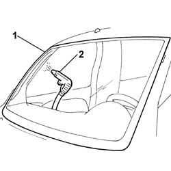

7035A04 WINDSCREEN - Removing penetration
- Path
- Procedures > 70 FITTINGS > 7035 BODYSHELL WINDOWS > 7035A windscreen > 7035A04 WINDSCREEN - Removing penetration
- Kind
- repair procedure (removal / refitting; the operation number is the code)
- Applies to
- all engines; all production periods
- Interactive page
- https://sloeber94.github.io/elrnDB-fDbl/en/#/2585117
Applies to: all engines; all production periods
1. Wet the outside of the windscreen with soapy water.
2. Blow through from the inside with compressed air and identify the penetration point.

Applies to: all engines; all production periods
If the penetration point is small, seal the area concerned from the inside.
Wait until the product is dry and repeat the test.
If the penetration point is more extensive, refer to op 7035A18